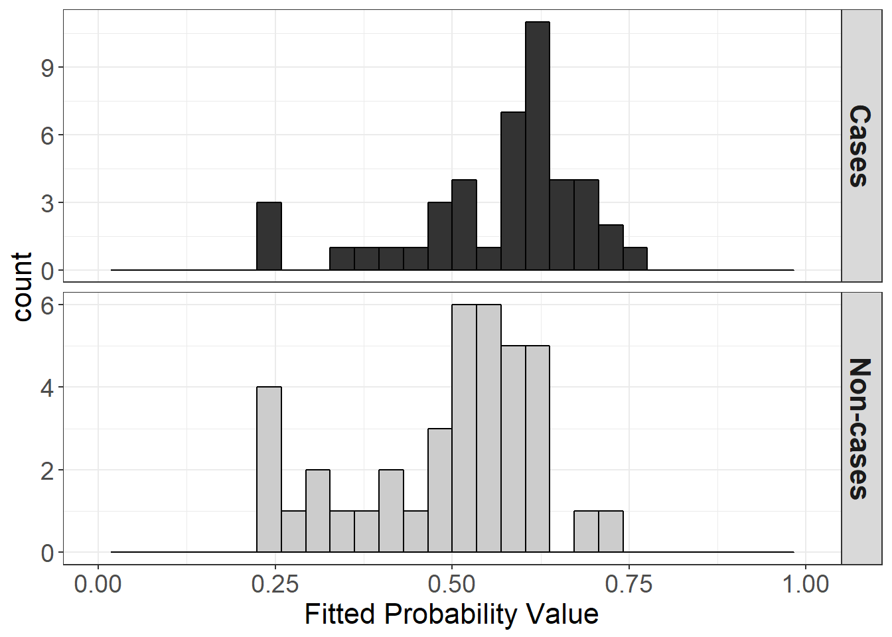

Summary Measures of Predictive Power for Logistic Regression Models of Disease Risk
Gareth Hughes, Robin Choudhury, Neil McRoberts
September 19, 2018
knitr::opts_chunk$set(echo = TRUE) #change this to FALSE to suppress printing the code
library(tidyverse)## -- Attaching packages -------------------------------------------- tidyverse 1.2.1 --## v ggplot2 3.0.0 v purrr 0.2.5
## v tibble 1.4.2 v dplyr 0.7.6
## v tidyr 0.8.1 v stringr 1.3.1
## v readr 1.1.1 v forcats 0.3.0## -- Conflicts ----------------------------------------------- tidyverse_conflicts() --
## x dplyr::filter() masks stats::filter()
## x dplyr::lag() masks stats::lag()library(pROC)## Type 'citation("pROC")' for a citation.##
## Attaching package: 'pROC'## The following objects are masked from 'package:stats':
##
## cov, smooth, varAbstract
For an ordinary least squares regression model, the coefficient of determination \(R^2\) describes the proportion (or percentage) of variance of the response variable explained by the model, and is a widely-accepted summary measure of predictive power. A number of \(R^2\)-analogues are available as summary measures of predictive power for logistic regression models, including models of disease risk. Tjur’s \(R^2\) and McFadden’s \(R^2\) are of particular interest in this context. Both these \(R^2\)-analogues have transparent derivations, which reveal that they apply to different aspects of model evaluation. Tjur’s \(R^2\) is a measure of separation between (known) actual states (e.g., gold standard determinations of “healthy” or “diseased” status) whereas McFadden’s \(R^2\) is a measure of separation between predicted states (e.g., forecasts of disease status based on models of disease risk). This clarifies their interpretation in the context of evaluation of logistic regression models of disease risk. In addition, versions of both Tjur’s \(R^2\) and McFadden’s \(R^2\) may be obtained from analyses of disease risk that are not preceded by logistic regression analysis.
Additional Keywords
discrimination, resolution, Nagelkerke’s \(R^2\), logarithmic scoring rule
# Analysis of SDM data from Choudhury et al 2016.
# Get the data and take a look at the top of the data file
data<-read_csv("data/roc.test.csv") ## Parsed with column specification:
## cols(
## Disease = col_integer(),
## Spore = col_double(),
## `Spore-1` = col_double(),
## `Spore-2` = col_double(),
## `Spore-3` = col_double(),
## `Spore-4` = col_double(),
## `Spore-5` = col_double(),
## `Spore-6` = col_double(),
## `Spore-7` = col_double(),
## `Spore-8` = col_double(),
## `Spore-9` = col_double()
## )head(data)# Fit the basic logistic regression on Disease using Spore.4
dismodel1 <- glm(Disease~`Spore-4`,family=binomial(link='logit'), data = data) #I needed to put tics (`) around Spore-4 because when i loaded it with read_csv it read it as 'Spore-4', not 'Spore.4' rac
summary(dismodel1)##
## Call:
## glm(formula = Disease ~ `Spore-4`, family = binomial(link = "logit"),
## data = data)
##
## Deviance Residuals:
## Min 1Q Median 3Q Max
## -1.5702 -1.2047 0.8288 1.0275 1.7194
##
## Coefficients:
## Estimate Std. Error z value Pr(>|z|)
## (Intercept) -1.21930 0.62024 -1.966 0.0493 *
## `Spore-4` 0.19279 0.08197 2.352 0.0187 *
## ---
## Signif. codes: 0 '***' 0.001 '**' 0.01 '*' 0.05 '.' 0.1 ' ' 1
##
## (Dispersion parameter for binomial family taken to be 1)
##
## Null deviance: 114.76 on 82 degrees of freedom
## Residual deviance: 108.55 on 81 degrees of freedom
## (4 observations deleted due to missingness)
## AIC: 112.55
##
## Number of Fisher Scoring iterations: 4Introduction
The Spore trap DNA count lagged by 4 observation periods (roughly 8-12 days) does have some positive association with subsequent disease state. Although the estimated effect of lagged spore trap signal is unlikely to be due to chance alone the odds of disease do not increase strongly with increase in the signal. This is the sort of situation where having a richer diagnosis of what the fitted model is doing would be useful.
To that end, we ask for McFadden’s and Tjur’s pseudo Rsq values for the model. Looking at the two values together tells us that the model has low discrimination capacity (Tjur) and would (consequently?) have a modest impact in probability updating (McFadden). We can look at the diagnostic plots to look at data, fitted model and “Tjur” histogram of the fitted probabilities.
# Take a look at the fitted probability values from the regression.
fits1<-as.numeric(dismodel1$fitted.values) # need this because fitted.values is a list and while hist understands what
# to do with it if you don't monkey about with it, asking it to sub-divide
# the vector of values using the logical == confuses it, so we have to
# pull the numerical bit out of the list.
dis_state2<-dismodel1$model$Disease #this pulls it directly from the model rac
spore4_rac<-dismodel1$model$`Spore-4` #this pulls it directly from the model rac
#I'm going to redo this in ggplot/tidyr feel free to ignore RAC
SDM_rac<-data.frame(fits1=fits1, disease=dis_state2, spore4=spore4_rac)
SDM_rac1<-SDM_rac %>%
mutate(.,status=ifelse(disease==0, "Non-cases", "Cases"))
SDM_rac1$status <- factor(SDM_rac1$status, levels = c("Cases","Non-cases"))
ggplot(SDM_rac1, aes(fits1, fill=status))+
geom_histogram(color="black")+
scale_x_continuous(limits=c(0,1))+
facet_grid(status~., scales = "free_y")+
xlab("Fitted Probability Value")+
scale_fill_manual(values = c("grey20", "grey80"))+
theme_bw()+
theme(legend.position = "none",
legend.background = element_blank(),
strip.text = element_text(face="bold", size = 16),
axis.title = element_text(size = 16),
axis.text = element_text(size = 14),
legend.text = element_text(size = 12),
legend.title = element_text(size = 14),
plot.title = element_text(size = 16, face = "bold"))+
ggtitle("Figure 1")+
guides(fill=guide_legend(title = "Status"))## `stat_bin()` using `bins = 30`. Pick better value with `binwidth`.
ggsave(filename = "figures/sdm_dot_hist_facet.png")## Saving 7 x 5 in image
## `stat_bin()` using `bins = 30`. Pick better value with `binwidth`. # Generate a plot of binary disease variable and fitted probabilities
# There are four NA values corresponding to zeros in the data. Dump
# the NA values and make a reduced vector for plotting the results
#Spore4<-na.omit(data$`Spore-4`) #couldnt get this to work rac
#plot(Spore4,dismodel1$fitted.values, xlab="ln(DNA copies)", ylab="Probability", col="dark blue",ylim=c(0,1))
#points(Spore.4,Disease, col="red")
SDM_rac_spore_melt=SDM_rac %>%
gather(est.type, disease, -spore4)
ggplot(SDM_rac_spore_melt, aes(spore4, disease, color=est.type))+
geom_point()+
xlab("Log of Spore Copy Number")+
ylab("Probability")+ #not sure this is the right label? rac
ggtitle("Fitted vs. Real Disease, SDM Data")+
theme(legend.position = c(.2,.8),
legend.background = element_blank(),
strip.text = element_text(face="bold", size = 16),
axis.title = element_text(size = 16),
axis.text = element_text(size = 14),
legend.text = element_text(size = 12),
legend.title = element_text(size = 14),
plot.title = element_text(size = 16, face = "bold"))+
guides(color=guide_legend(title = "Estimate Type"))+
scale_color_discrete(labels=c("Disease Incidence","Fitted Disease Data"))
ggsave(filename = "figures/sdm_real_fit.png")## Saving 7 x 5 in imageCalculating Tjur’s \(R^2\)
Tjur (2009) quantifies this separation in terms of the coefficient of discrimination, \(D\), where \(D=\bar{\hat{p}}_{c}-\bar{\hat{p}}_{nc}\) in which \(\bar{\hat{p}}_{c}\) and \(\bar{\hat{p}}_{nc}\) denote the means of the histograms characterizing the frequency distributions of fitted probabilities for the case and non-case groups, respectively, and \(0 < D < 1\). Thus \(D\) characterizes the predictive power of a logistic regression model in terms of the separation between predictions for the case and non-case groups, on a probability scale (i.e., discrimination). We calculate D on the basis of the fitted probability values for individual subjects as calculated in the model output, not as binned for Figure 1.
pc<-mean(subset(SDM_rac, disease == 1)$fits1)
pnc<-mean(subset(SDM_rac, disease == 0)$fits1)
d=pc-pnc
print(paste("Tjur's coefficient of discrimination is", round(d,4)))## [1] "Tjur's coefficient of discrimination is 0.0735"Visualizing Tjur’s \(R^2\) Coefficient
While the histogram displayed in figure 1 matches the format from Tjur (2009), linking the histogram to the Tjur’s \(R^2\) coefficient can help to visualize this value. Now we can more easily see how Tjur’s D relates to the predicted cases and non-cases.
ggplot(SDM_rac1, aes(fits1, fill=status))+
geom_histogram(color="black", position = "identity", alpha=0.5)+
scale_x_continuous(limits=c(0,1))+
geom_vline(xintercept =pc, color="#002C6AFF")+
geom_vline(xintercept =pnc, color="#CBBA69FF")+
geom_segment(aes(x = pnc+(pc+pnc)/200, y = 9.2, xend = pc-(pc+pnc)/200, yend = 9.2), size=2)+
geom_segment(aes(x = pc-(pc+pnc)/200, y = 9.2+0.2, xend = pc-(pc+pnc)/200, yend = 9.2-0.2), size=2)+
geom_segment(aes(x = pnc+(pc+pnc)/200, y = 9.2+0.2, xend = pnc+(pc+pnc)/200, yend = 9.2-0.2), size=2)+
annotate("text", label = "italic(D)", parse=T, x = (pc+pnc)/2, y = 10, size = 8)+
xlab("Fitted Probability Value")+
scale_fill_manual(values = c("#002C6AFF", "#CBBA69FF"))+
theme_bw()+
theme(legend.position = c(.2, .8),
legend.background = element_blank(),
strip.text = element_text(face="bold", size = 16),
axis.title = element_text(size = 16),
axis.text = element_text(size = 14),
legend.text = element_text(size = 12),
legend.title = element_text(size = 14),
plot.title = element_text(size = 16, face = "bold"))+
ggtitle(expression(paste("Figure 1 Visualizing Tjur's Coefficient of Discrimination (", italic("D"), ")")))+
guides(fill=guide_legend(title = "Status"))## `stat_bin()` using `bins = 30`. Pick better value with `binwidth`.
ggsave(filename = "figures/sdm_dot_hist_facet.png")## Saving 7 x 5 in image
## `stat_bin()` using `bins = 30`. Pick better value with `binwidth`.ROC analysis and Calculating Youden’s \(J\)
Completing a Receiver Operating Characteristic (ROC) analysis can help to highlight useful thresholds for binary predictors. One commonly used statistic to assess the diagnostic test is the Youden’s index (commonly referred to as the Youden’s \(J\)). This value ranges between 0 and 1, and is calculated as \(J=sensitivity + speficifity - 1\), where sensitivity is written as \(\hat{p}_{+|c}\), and specificity is \(\hat{p}_{-|nc}\).
roc_4<-roc(data$Disease, data$`Spore-4`)
youden_j<-data.frame(as.list(coords(roc_4, x="best", input="threshold", best.method="youden"))) %>%
mutate(inv_spec=1-specificity,
youden_j=sensitivity+specificity-1);youden_jggroc(roc_4, legacy.axes = T)+
geom_abline(slope = 1) +
geom_point(data=youden_j, aes(inv_spec, sensitivity), shape=21, size=4, fill="red") +
annotate("text", label = "Youdens J",x = youden_j$inv_spec, y = youden_j$sensitivity+0.1, size=8 )
SDM_rac2<- SDM_rac1 %>%
mutate(status_pred_youden = ifelse(spore4>youden_j$threshold, "Cases", "Non-cases"),
status_pred_count = ifelse(spore4>youden_j$threshold, 1, 0),
status_pred_count_test = ifelse(fits1>0.5, 1, 0))
case_prior= sum(SDM_rac2$disease)/nrow(SDM_rac2)
control_prior=1-case_prior
p_c_plus<-SDM_rac2 %>%
filter(status_pred_youden == "Cases")
p_c_plus<-sum(p_c_plus$disease)/nrow(p_c_plus)
p_nc_plus<-1-p_c_plus
p_c_minus<-SDM_rac2 %>%
filter(status_pred_youden == "Non-cases")
p_c_minus<-sum(p_c_minus$disease)/nrow(p_c_minus)
p_nc_minus<-1-p_c_minusCalculating McFadden’s \(R^2\)
Whereas Tjur’s \(R^2\) is a measure of separation between (known) actual states (e.g., gold standard determinations of “healthy” or “diseased” status), McFadden’s \(R^2\) is a measure of separation between predicted states (e.g., forecasts of disease status based on models of disease risk). In other words, Tjur’s \(R^2\) is a discrimination metric, and McFadden’s \(R^2\) is a resolution metric, defined conditionally on the disease forecast.
case_count<-sum(SDM_rac2$disease)
control_count<-nrow(SDM_rac2)-case_count
log_score_case_prior<- -log(case_prior)
log_score_control_prior<- -log(control_prior)
S0<-log_score_case_prior*case_count + log_score_control_prior*control_count
log_p_c_plus<- -log(p_c_plus)
log_p_nc_plus<- -log(p_nc_plus)
log_p_c_minus<- -log(p_c_minus)
log_p_nc_minus<- -log(p_nc_minus)
p_nc_pred_count<-SDM_rac2 %>%
filter(status_pred_youden == "Non-cases") %>%
count(status)
p_c_pred_count<-SDM_rac2 %>%
filter(status_pred_youden == "Cases") %>%
count(status)
S<-log_p_c_plus*p_c_pred_count[1,2] +
log_p_nc_plus*p_c_pred_count[2,2] +
log_p_c_minus*p_nc_pred_count[1,2] +
log_p_nc_minus*p_nc_pred_count[2,2]
mcfaddens<-1-(S/S0)
print(paste("McFadden's coefficient of discrimination is", round(mcfaddens,4)))## [1] "McFadden's coefficient of discrimination is 0.1034"maddala<-1-exp(-(2/nrow(SDM_rac2))*(S0-S))
nagelkerke<- maddala / (1-exp(-(2/nrow(SDM_rac2))*(S0)))sessionInfo()## R version 3.5.1 (2018-07-02)
## Platform: x86_64-w64-mingw32/x64 (64-bit)
## Running under: Windows 10 x64 (build 16299)
##
## Matrix products: default
##
## locale:
## [1] LC_COLLATE=English_United States.1252
## [2] LC_CTYPE=English_United States.1252
## [3] LC_MONETARY=English_United States.1252
## [4] LC_NUMERIC=C
## [5] LC_TIME=English_United States.1252
##
## attached base packages:
## [1] stats graphics grDevices utils datasets methods base
##
## other attached packages:
## [1] bindrcpp_0.2.2 pROC_1.12.1 forcats_0.3.0 stringr_1.3.1
## [5] dplyr_0.7.6 purrr_0.2.5 readr_1.1.1 tidyr_0.8.1
## [9] tibble_1.4.2 ggplot2_3.0.0 tidyverse_1.2.1
##
## loaded via a namespace (and not attached):
## [1] Rcpp_0.12.18 cellranger_1.1.0 pillar_1.3.0 compiler_3.5.1
## [5] plyr_1.8.4 bindr_0.1.1 tools_3.5.1 digest_0.6.15
## [9] lubridate_1.7.4 jsonlite_1.5 evaluate_0.11 nlme_3.1-137
## [13] gtable_0.2.0 lattice_0.20-35 pkgconfig_2.0.2 rlang_0.2.2
## [17] cli_1.0.0 rstudioapi_0.7 yaml_2.2.0 haven_1.1.2
## [21] withr_2.1.2 xml2_1.2.0 httr_1.3.1 knitr_1.20
## [25] hms_0.4.2 rprojroot_1.3-2 grid_3.5.1 tidyselect_0.2.4
## [29] glue_1.3.0 R6_2.2.2 readxl_1.1.0 rmarkdown_1.10
## [33] reshape2_1.4.3 modelr_0.1.2 magrittr_1.5 backports_1.1.2
## [37] scales_1.0.0 htmltools_0.3.6 rvest_0.3.2 assertthat_0.2.0
## [41] colorspace_1.3-2 labeling_0.3 stringi_1.2.4 lazyeval_0.2.1
## [45] munsell_0.5.0 broom_0.5.0 crayon_1.3.4